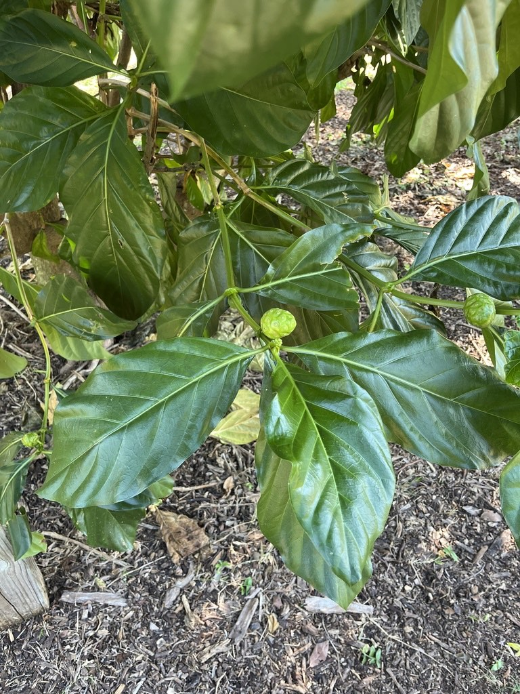

- Fully ripe noni earns its nicknames — cheese fruit, vomit fruit — honestly. The pungent, fermented odor is an evolutionary broadcast aimed squarely at fruit bats, which are the primary seed dispersers across noni's native range. The smell is not a flaw; it is the whole strategy.
- Polynesian seafarers treated noni as a canoe plant — one of a handful of species so essential to survival that it was carried on every long ocean voyage. It served as a portable medicine chest, a textile dye source, and a famine food all packed into one small tree.
- Noni is a two-dye tree: the bark yields a red pigment and the roots a yellow one. Across the Pacific and Southeast Asia, both colors were extracted from a single organism and used to dye fabric for centuries.
- Noni ignores the calendar entirely. A mature tree flowers and fruits continuously year-round, and a single branch can carry fresh white blooms, hard green unripe fruit, and translucent ripe fruit all at the same time.
Noni is native to a vast tropical zone spanning the Indian subcontinent, Southeast Asia, the Pacific Islands, and northern Australia. Remarkably resilient, it thrives in coastal zones, coral atolls, and brackish shores — and is recognized as one of the first woody pioneer species to colonize completely bare lava fields after an eruption.
Long before European exploration, the plant's range expanded dramatically through human migration. Polynesian voyagers carefully packed noni among their canoe plants, intentionally introducing the tree to distant archipelagos as they settled the Pacific over hundreds of years.
In more recent history, noni was introduced to the Americas and the Caribbean through botanical collection and cultivation. It has naturalized across global tropical environments, finding a comfortable modern home in South and Central Florida as an ornamental and collection fruit tree.
- The genus name Morinda is a compressed form of the Latin morus (mulberry) and indicus (Indian), a nod to the fruit's visual resemblance to a true mulberry. The species name citrifolia means 'with leaves like Citrus' — you can see why when you look at the large, glossy, prominently veined leaves.
- Noni has one of the broader ethnobotanical records of any tropical plant. Roots, bark, leaves, and fruit have all been used medicinally in traditional Pacific and Asian cultures for well over two thousand years, with the first written mention appearing in Chinese literature during the Han dynasty.
- Polynesian peoples held noni in particular reverence — it was considered a gift from the gods and, because of its ability to grow on lava fields, was associated with the volcano goddess Pele. That sacred status is part of why voyagers made certain it traveled with them on every long ocean journey.
- Commercial interest in noni juice exploded in the 1990s and has generated considerable research, along with considerable marketing hype. Most of the dramatic health claims remain unconfirmed by rigorous clinical trials, though the fruit's nutritional profile — antioxidants, vitamins, and various bioactive compounds — is well documented.
The flowers are a reliable nectar source for honey bees and other pollinating insects; noni's flower nectaries are notably attractive to bees throughout its range. The plant also produces extrafloral nectaries that draw ants, which in turn provide some protection against herbivorous insects — a quiet mutualism that requires no help from us.
The real wildlife action centers on the ripe fruit. Its strong, fermented odor — off-putting to most humans — is precisely what attracts fruit bats, which are the primary seed dispersers across much of noni's native range. Birds also take the fruit and spread seeds.
Because noni has no co-evolutionary history with Florida's native fauna, it does not serve as a larval host for local butterflies or moths, but its flowers do bring in bees and general pollinators.
Small, white, tubular, and fragrant, with five petals fused into a tube. Flowers emerge in dense globe-shaped heads directly from the developing fruit — so the blooms appear to be growing out of the fruit itself rather than on separate stalks. The plant is monoecious (both sexes on the same individual) and flowering continues year-round in Florida's warm climate.
A lumpy, oval compound fruit formed from many fused drupes, typically 2 to 4 inches long, with a warty surface marked by hexagonal facets — each one the imprint of an individual drupelet. Fruit progresses from hard and green to translucent yellow-white when ripe, at which point it softens dramatically and develops its characteristic pungent odor.
Seeds are buoyant and hydrophobic, capable of surviving long ocean voyages — a key reason noni spread so widely across the Pacific.
Large, simple, opposite, and glossy dark green, with deeply impressed veins that give the surface a quilted look. Blades are broadly elliptic, typically 8 to 20 inches long. The plant is evergreen and holds its foliage year-round.
Young stems are distinctively four-sided — square in cross-section with rounded angles — a reliable field mark that sets noni apart from most other small trees. The trunk is straight; bark is pale gray-brown.
Propagated from seed and by stem or root cuttings; seeds germinate readily. A mature tree begins flowering and fruiting within about 18 months of transplanting and then produces continuously.
Step up close and start at the stem tips: young growth is distinctly four-sided — square in cross-section — which is unusual for any tree this size and a dependable ID mark.
Next, trace down to where the white tubular flowers emerge; they bloom directly from the surface of the lumpy, potato-shaped young fruit rather than on separate stalks, an arrangement that looks wrong until you realize it is exactly how noni works.
Finally, lean in on the mature fruit and look for the honeycomb of hexagonal facets covering its skin — each one a permanent scar left by an individual flower drupelet.
The fruit is edible and has been consumed across the Pacific for centuries, but approach a taste test with honest expectations: ripe noni has a powerfully pungent odor and a bitter, intensely medicinal flavor, and the texture becomes very soft and mushy at peak ripeness. It is typically fermented or blended with sweeter fruits to make it palatable.
The plant and its fruit are non-toxic to dogs and cats, and commercial noni juice is generally regarded as safe at normal consumption levels — though case reports have linked large or chronic doses to liver stress in humans, so moderation applies.
Noni belongs to the coffee family (Rubiaceae), and the kinship is visible once you know it: the glossy leaves, tubular white flowers, and overall growth habit echo its more famous relative. The family also includes gardenias, pentas, and buttonbush.
The seeds are naturally buoyant and water-resistant — each one carries a small air chamber and a hydrophobic seed coat that lets it float for months without losing viability. This is how noni colonized Pacific atolls long before humans arrived with canoes, and it is part of what makes the species such a capable long-distance traveler.
For those curious enough to try processing noni at home, the traditional method involves placing ripe, yellow-white fruits in a sealed glass jar at ambient temperature and allowing them to ferment naturally for roughly two months. The fruit breaks down and releases juice that seeps out on its own — no pressing needed.
The result is tart and funky; most people blend it with sweeter fruit juice before drinking.


- © elurding (CC-BY-NC), via iNaturalist